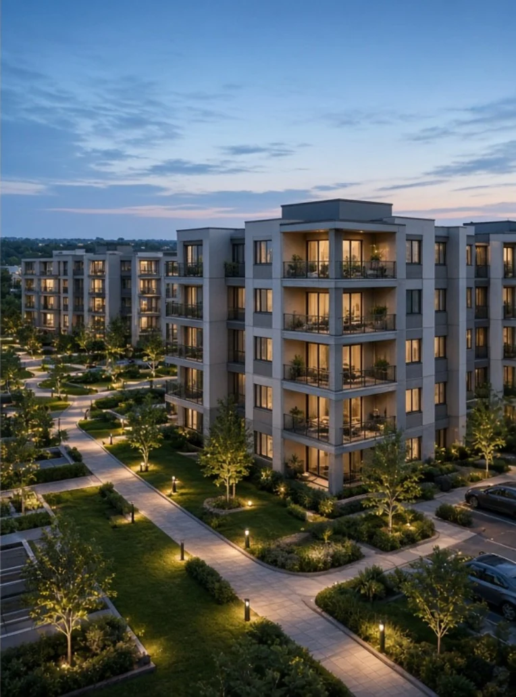
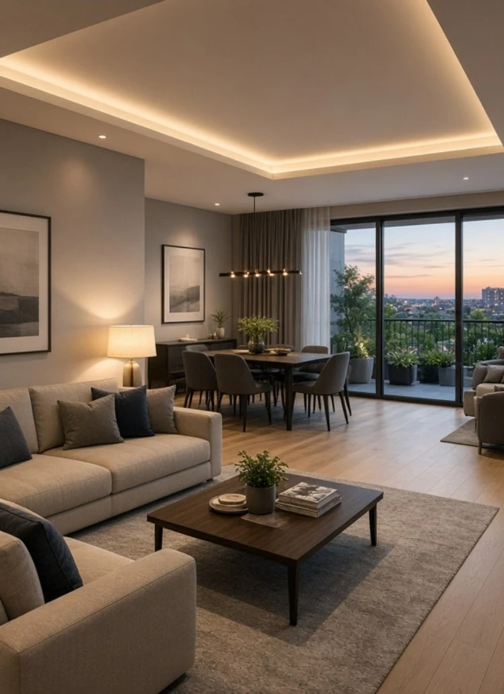
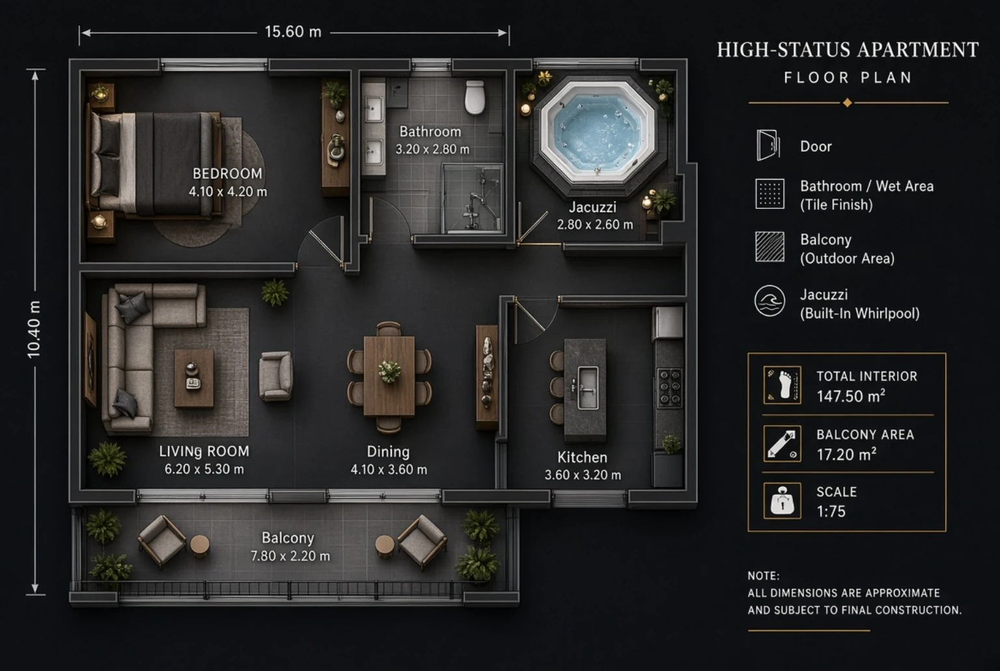
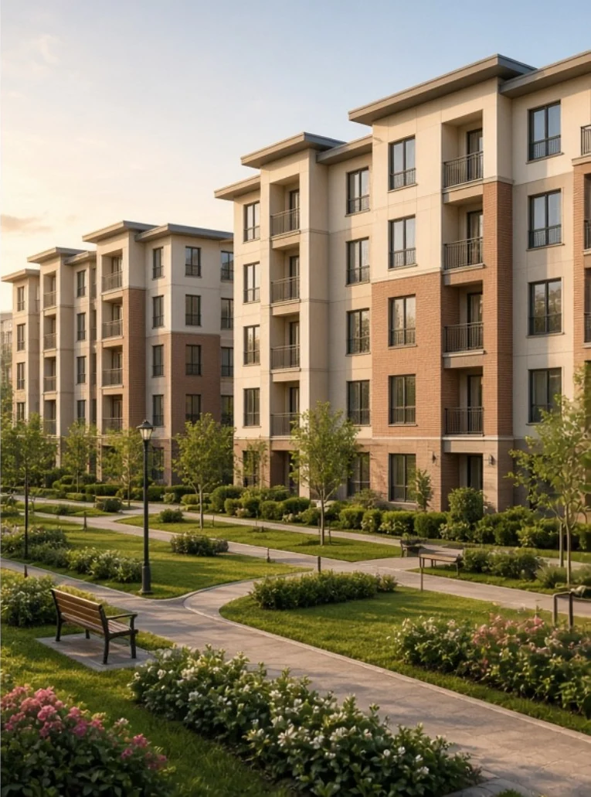
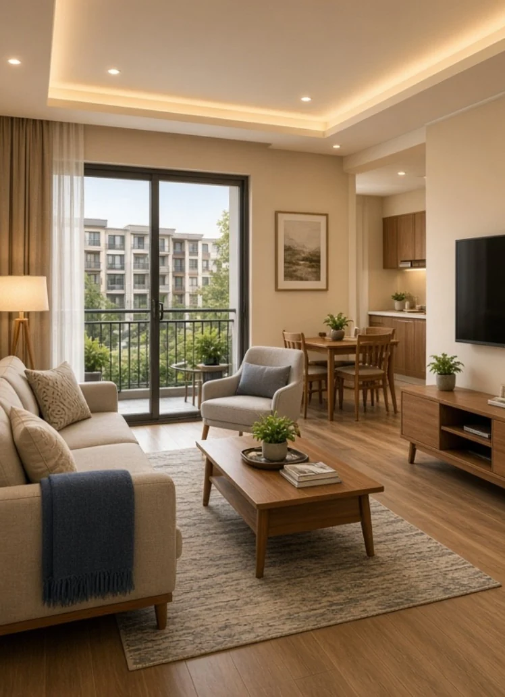
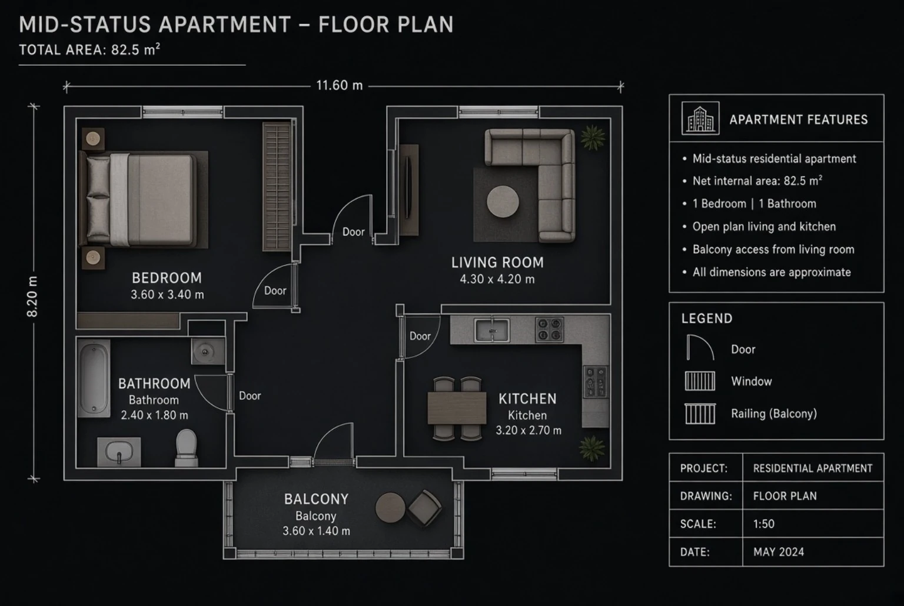
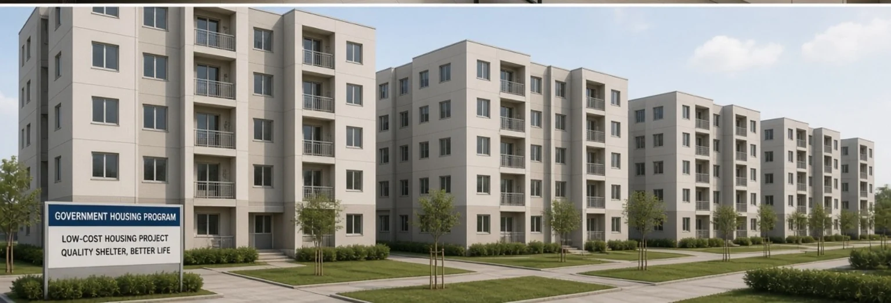
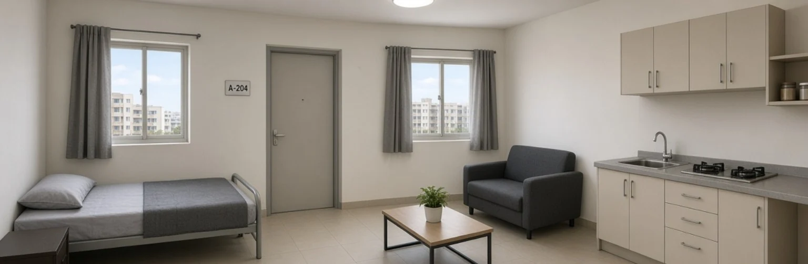
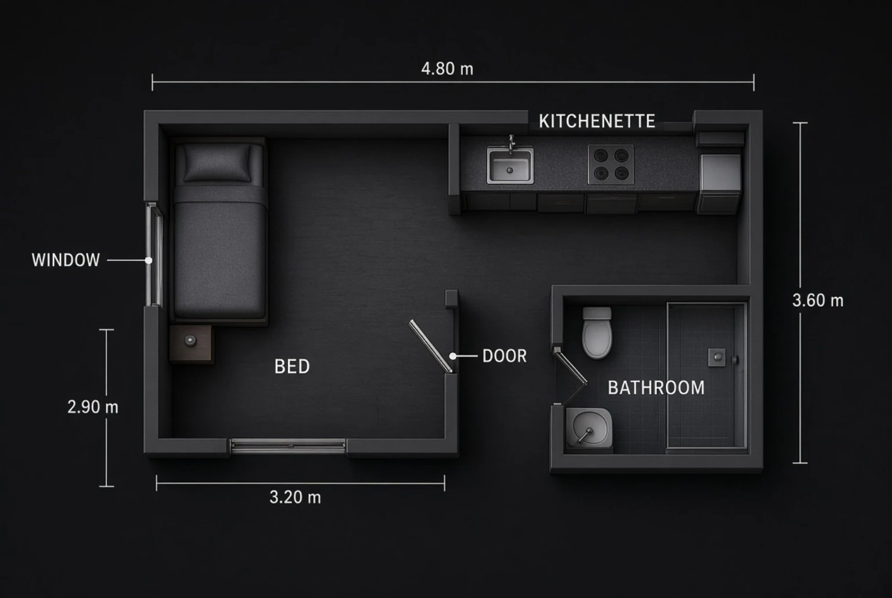

Facilities / Residential Assignments
Housing Facilities
Housing status is an internal Project Rebirth designation for enrolled adult women only. It does not classify the wider population of Kuroshiro. The character registry's R-I to R-V classifications remain separate and unchanged.
Housing Tier 01
High Status
Premium Residence — Private, well-appointed apartments, landscaped grounds and priority amenities.



Housing Tier 02
Mid Status
Standard Residence — Comfortable apartments with shared gardens and practical everyday facilities.



Housing Tier 03
Low Status
Government Housing — Compact government-provided accommodation with essential furnishings and services.


